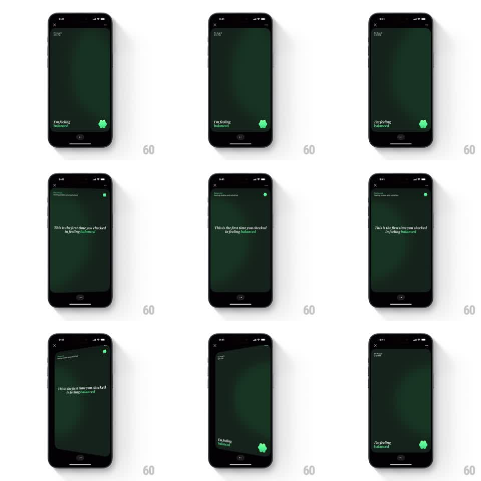

Media
Frame-by-frame

Rebuild this interaction 1:1: How We Feel's check-in card flip - tapping the "I'm feeling" card flips the entire screen like a physical card in 3D to reveal a serif insight on the back, then flips back.

Rebuild this interaction 1:1: How We Feel's check-in card flip - tapping the "I'm feeling" card flips the entire screen like a physical card in 3D to reveal a serif insight on the back, then flips back. ## Integration Integration: stack-agnostic spec - springs given as stiffness/damping, timed motions as duration + curve; map every value to your framework and animation library of choice. ## Scene Full-bleed dark green card (the check-in): date top-left, an X and overflow menu top corners, "I'm feeling balanced" bottom-left in serif with the emotion word highlighted, and the green blob mascot bottom-right. The back face: same dark green with a small green dot top-right and the insight in italic serif, "This is the first time you checked in feeling balanced." ## Motion spec Pattern: full-screen 3D card flip on tap. - Tap anywhere on the card: it rotates 180deg around the vertical center axis with strong perspective (camera distance ~1000px), 600ms, ease-in-out. - Mid-flip (past 90deg) the front face swaps to the back face; both faces show a subtle shading gradient that tracks the rotation so the card reads as lit paper, darker as it edge-ons. - The card slightly scales down (to ~0.96) during the first half of the flip and back up on landing - the lift that sells the physical turn. - Tap again to flip back along the same axis, reverse direction. - Corner controls (X, menu, date) live on the card face and flip with it; the back face has its own minimal chrome. ## Calibration - Keep the flip on the vertical axis only; a diagonal or horizontal flip breaks the "turn the card over" metaphor. - 600ms is the floor - faster reads as a screen slide, slower feels sticky. ## Reduced motion Crossfade between front and back faces with a 150ms scale dip (1.0 to 0.98 to 1.0). ## Don't miss - The background behind the card is black; during the flip you see slivers of it at the card edges - keep the card full-bleed with no border. - The insight text stays readable at rest: italic serif, centered-left, generous line height.